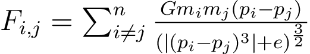
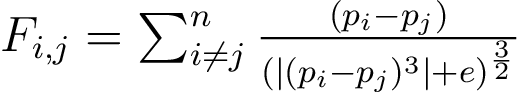
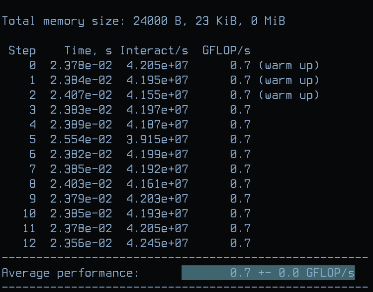

Analyse des performances et optimisation d'un noyau de simulation d'intéractions entre N-corps dans un espace 3D
Table of Contents
1. Introduction aux simulations à N-corps
En physique, une simulation à N-corps d'un système dynamique de particules consiste à simuler les intéractions des particules sous l'effet d'une ou plusieurs forces (gravité, magnétisme et électro-magnétisme, …). Ce type de simulations est utilisé dans plusieurs domaines de la physique (cosmologie, astrophysique, semiconducteurs, dynamique des fluides, …) afin d'étudier les comportements de systèmes complexes (planètes, étoiles, gases, …). Par exemple, en cosmologie, ces simulations permettent d'étudier de façon détaillée les processus non-linéaires tels que la formation de galaxies ou l'évolution de clusters d'étoiles.
Pour ce projet, le code fournit implémente un noyau qui simule l'interaction Newtonienne de plusieurs particules qui s'influencent mutuellement dans un espace 3D en utilisant la loi gravitationnelle de Newton:

Figure 1: Équation de Newton permettant de calculer la force d'intéraction de deux particules i et j
Dans cette équation, mi et mj représentent les masses respectives des particules i et j. pi et pj représentent leurs positions dans l'espace 3D de simulation. G repsésente la constante gravitationnelle.
Afin de simplifier l'équation, nous considérons que: G = mi = mj = 1. Conséquemment, l'équation implémentée est la suivante:

Figure 2: Équation de Newton simplifiée
Pour plus d'informations sur la physique des simulations gravitationnelles à N-corps, vous pouvez vous référer à l'article suivant: Gravitational N-body simulations.
2. Travail à faire
Ce projet consiste à analyser et à optimiser les performances d'un code non optimal fournit en utilisant plusieurs compilateurs et en adaptant le code à l'architecture cible.
2.1. Analyse des performances
Le code fournit effectue déjà une mesure des performances du noyau central en utilisant une primitive de chronométrage
fournie par OpenMP (omp_get_wtime()) qui retourne le temps d'exécution en secondes.
La figure ci-dessous présente la sortie du programme pour un nombre de particules n = 1000.

Figure 3: Exemple de la sortie du programme nbody3D
Comme vous pouvez le constater, la mesure des performances se base sur 4 métriques:
Time: le temps d'éxécution du noyau en secondesInteractions/s: le nombre d'interactions traitées par secondeGFLOP/s: le nombre d'opérations d'arithmétique flottante effectuées par seconde (appelée aussi intensité arithmétique)Average performance: la performance moyenne (enGFLOP/s) du noyau sur 10 exécutions
Ces métriques nous permettent d'évaluer le temps d'exécution ainsi que la quantité de "travail" effectuée durant une unité de temps (1 seconde). Afin de pouvoir évaluer la performance avec un haut degré de précision, le noyau est exécuté plusieurs fois (13 exécutions) et sa performance est mesurée à chaque exécution. Les trois premières exécutions sont destinées à échauffer (warm up) le système et sont donc ignorées lors du calcul de la performance moyenne et de la déviation/erreur. Échauffer le système est crucial afin d'éviter de bruiter les mesures par les effets dus à la gestion dynamique de la fréquence et du voltage (DVFS - Dynamic Voltage and Frequency Scaling). DVFS est généralement utilisé afin de réduire la consommation énérgétique et économiser la batterie.
Sur la figure ci-dessus, la performance mesurée est de 0.7 GFLOP/s (ou 700 MFLOP/s) et la déviation/erreur est égale à 0.0. Une déviation/erreur nulle signifie que les mesures ont été effectuées dans un environnement stable et sans bruit.
2.1.1. Stabilisation du système
Afin de garantir une mesure des performances stable et valide, il vous faudra stabiliser votre système en suivant les recommendations suivante:
- 1. Si vous effectuez vos mesures sur un laptop, veillez à ce qu'il soit branché au secteur. Les batteries ne fournissent pas assez de puissance (Watts) pour que le CPU puisse atteindre sa fréquence maximale
- 2. La fréquence du CPU doit être fixe et configurée à sa valeur maximale
- 3. Aucun autre programme (navigateur, …) ne doit partager le système lors des mesures. Si possible, désactivez le réseau ainsi que l'interface graphique
- 4. Le programme doit être alloué sur un seul coeur de calcul afin d'éviter le bruit causé par la migration des processus. Le coeur n° 0 du CPU est à éviter car il est utilisé par défaut pour exécuter l'OS
- 5. Effectuer la mesure des performances sur un système Linux natif. Toute mesure sur un système virtuel est considérée comme invalide car la virtualisation est de par sa nature considérée comme du bruit (point 4).
- Comment fixer la fréquence du CPU sous Linux?
Avant de fixer la fréquence du CPU, il vous faudra vérifier quels sont les frequency governors présents sur votre système Linux en utilisant la commande suivante:
$ sudo cpupower -c all frequency-info analyzing CPU 0: driver: intel_pstate CPUs which run at the same hardware frequency: 0 CPUs which need to have their frequency coordinated by software: 0 maximum transition latency: Cannot determine or is not supported. hardware limits: 800 MHz - 3.80 GHz available cpufreq governors: performance powersave current policy: frequency should be within 800 MHz and 3.80 GHz. The governor "powersave" may decide which speed to use within this range. current CPU frequency: Unable to call hardware current CPU frequency: 1.20 GHz (asserted by call to kernel) boost state support: Supported: yes Active: yes analyzing CPU 1: driver: intel_pstate CPUs which run at the same hardware frequency: 1 CPUs which need to have their frequency coordinated by software: 1 maximum transition latency: Cannot determine or is not supported. hardware limits: 800 MHz - 3.80 GHz available cpufreq governors: performance powersave current policy: frequency should be within 800 MHz and 3.80 GHz. The governor "powersave" may decide which speed to use within this range. current CPU frequency: Unable to call hardware current CPU frequency: 1.25 GHz (asserted by call to kernel) boost state support: Supported: yes Active: yes analyzing CPU 2: driver: intel_pstate CPUs which run at the same hardware frequency: 2 CPUs which need to have their frequency coordinated by software: 2 maximum transition latency: Cannot determine or is not supported. hardware limits: 800 MHz - 3.80 GHz available cpufreq governors: performance powersave current policy: frequency should be within 800 MHz and 3.80 GHz. The governor "powersave" may decide which speed to use within this range. current CPU frequency: Unable to call hardware current CPU frequency: 1.20 GHz (asserted by call to kernel) boost state support: Supported: yes Active: yes analyzing CPU 3: driver: intel_pstate CPUs which run at the same hardware frequency: 3 CPUs which need to have their frequency coordinated by software: 3 maximum transition latency: Cannot determine or is not supported. hardware limits: 800 MHz - 3.80 GHz available cpufreq governors: performance powersave current policy: frequency should be within 800 MHz and 3.80 GHz. The governor "powersave" may decide which speed to use within this range. current CPU frequency: Unable to call hardware current CPU frequency: 1.20 GHz (asserted by call to kernel) boost state support: Supported: yes Active: yesComme vous pouvez le constater sur la sortie de la commande, deux governors sont disponibles: performance et powersave. Nous pouvons aussi observer que tous les coeurs du CPU sont configurés en mode powersave. En fonction du driver de votre CPU (
intel_pstate,acpi_cpufreq, …), il est possible que votre système présente plusieurs autres governors (schedutil, userspace, …).Pour configurer les coeurs en mode performance, vous devez utiliser la commande suivante:
$ sudo cpupower -c all frequency-set -g performance
Vous pouvez, bien sûr, ciblé un coeur en particulier en spécifiant sont identifiant à la place de all. Par exemple, la commande suivante permet de modifier le governor du coeur n °2 indépendamment des autres coeurs:
$ sudo cpupower -c 2 frequency-set -g performance
- Comment allouer un processus sur un coeur du CPU?
Afin d'éviter de bruiter les mesures par la migration de processus implémentée par l'OS pour améliorer la gestion des ressources CPU, il faut signaler à l'OS que le programme nbody3D doit s'exécuter sur un coeur désigné. Cette technique est généralement nommée: thread/process core pinning. Pour pin le programme nbody3D sur un coeur de calcul (i.e. le coeur n° 3) vous pouvez utiliser la commande suivante:
$ taskset -c 3 ./nbody3D
2.1.2. Compilation
Afin d'explorer et maximiser les possibilités en terme de performance, il vous faudra compiler chaque version du code avec GCC et LLVM CLANG, puis comparer leurs performances côte à côte. GCC et LLVM CLANG s'installent facilement sur tous les systèmes Linux et sont compatibles au niveau de leurs interfaces. Cependant, il est toutefois recommandé de se référer à la documentation (man gcc et man clang). Le diable est dans le détail!!
2.1.3. Profileurs
Il est possible d'utiliser des profileurs de performance tels: Intel VTune, AMD µProf, Linux perf ou MAQAO. Dans ce cas, il faudra fournir les données brutes ainsi que des explications relatives aux métriques retournées par ses outils et à leur stabilité.
2.2. Optimisation
Les optimisations peuvent être appliquées à deux niveaux:
Compilation
GCC et LLVM CLANG proposent plusieurs options pour piloter les optimisations et générer du code machine adapté à l'architecture cible. Les niveaux d'optimisation que vous devrez tester sont les suivants: -O2, -O3 et -Ofast. Plus d'informations sont disponibles ici: https://gcc.gnu.org/onlinedocs/gcc/Optimize-Options.html. Chaque niveau d'optimisation implémente un ensemble de transformations destinées à produire du code machine performant. Cependant, le flag d'optimisation -Ofast peut sacrifier la stabilité numérique des calculs au profit d'une meilleure performance en appliquant des transformations sur l'ordre des opérations d'arithmétique flottante. Il vous faudra donc fournir une analyse de la stabilité numérique en modifiant le code original afin de générer un fichier comportant les valeurs des positions des particules après la fin de la simulation. Il faudra utiliser la sortie de la version de base du code comme référence numérique. Afin de calculer la distance entre la sortie de référence et celles des différentes versions optmisées du code, vous pouvez utiliser l'algorithme décrit plus bas:
f64 compute_delta(f64 *p_ref, f64 *p, u64 n) { f64 delta = 0.0; for (u64 i = 0; i < n; i++) delta += (p_ref[i] - p[i]); delta /= (f64)n; return delta; }
Afin d'assurer que les optimisations des compilateurs sont adaptées à l'architecture cible, vous pouvez utiliser les flag -march=
TARGET_ARCHen spécifiant l'architecture cible. Vous trouverez les identifiants des architectures et plus ici: https://gcc.gnu.org/onlinedocs/gcc/x86-Options.html. Il est aussi possible de faire détecter l'architecture par le compilateur en utilisant le flag: -march=native.Pour chaque version et chaque compilateur, il faudra fournir une brève analyse du code assembleur du noyau de simulation. Cette analyse devra évaluer la qualité du code généré par rapport à la vectorisation, le déroulage, … Certains outils comme MAQAO CQA ou llvm-mca fournissent des analyses détaillées des codes assembleurs par rapport à une de l'architecture cible.
Code source
Le code fournit n'étant pas optimal, plusieurs transformations devront être appliquées au niveau du code source. Par exemple:
- élimination/remplacement des opérations les plus coûteuses: divisions, racines carrées, puissances, …
- restructuration des structures de données afin de bénéficier d'accès mémoire linéaires et alignés et favoriser la vectorisation automatique par les compilateurs
- déroulage et blocking manuel
- usage de librairies externes (Intel MKL, AMD BLIS, …)
- changement d'algorithme: Barnes-Hut, FFM (Fast Multipole Method)
3. Rendu
Il vous faudra fournir une archive nommée comme suit NOM_PRENOM_iatic4_proj.tar.gz contenant:
les informations (un fichier cpu.info) sur l'architecture sur laquelle vous avez efféctué vos expériences. Vous pouvez obtenir les informations sur votre système en utilisant les commandes suivantes:
$ cat /proc/cpuinfo > cpu.info ou $ lscpu > cpu.info
les informations sur la hiérarchie des caches de données de votre système (fichiers: L?.info):
# Cache L1 $ cat /sys/devices/system/cpu/cpu0/cache/index0/* > L1.info # Cache L2 $ cat /sys/devices/system/cpu/cpu0/cache/index2/* > L2.info # Cache L3 $ cat /sys/devices/system/cpu/cpu0/cache/index3/* > L3.info
- le code source de toutes les versions du code
- les données brutes des mesures de performance
- un rapport au format PDF structuré comme suit (avec une Section ? par expérience):
- Introduction: introduction du projet, ses objectifs et la structure du rapport
- Environnement: présentation de l'architecture cible, des compilateurs et leurs versions, …
- Section ?: section introduisant une expérience
- Introduction: l'objectif de l'expérience et ses paramètres (flags de compilation, transformation du code, …)
- Résultats: présentation et commentaire des résultats (tableau, graphique, …) de l'expérience.
- Conclusion: résumer des résultats obtenus et conclusion par rapport au résultats de l'expérience
- Comparaison: section comparant (tableaux et graphiques de comparaison) les performances des différentes versions du code avec différents flags et différents compilateurs.
- Conclusion: expliquer brièvement le travail effectué et conclure par rapport à la version la plus optimale
4. Conseil
In doubt, STFU and RTFM :]
5. Playlist
- FREAK KITCHEN - Morons
- PERIPHERY - Absolomb (the ending is EPIC!)
- PERIPHERY - Lune
- ANIMALS AS LEADERS - Red Miso
- ANIMALS AS LEADERS - Ka$casde
- RAMIN DJAWADI - Bicameral Mind
- FREAK KITCHEN - Freak of the week
- ANNIHILATOR - Torn
- ANNIHILATOR - Shallow grave